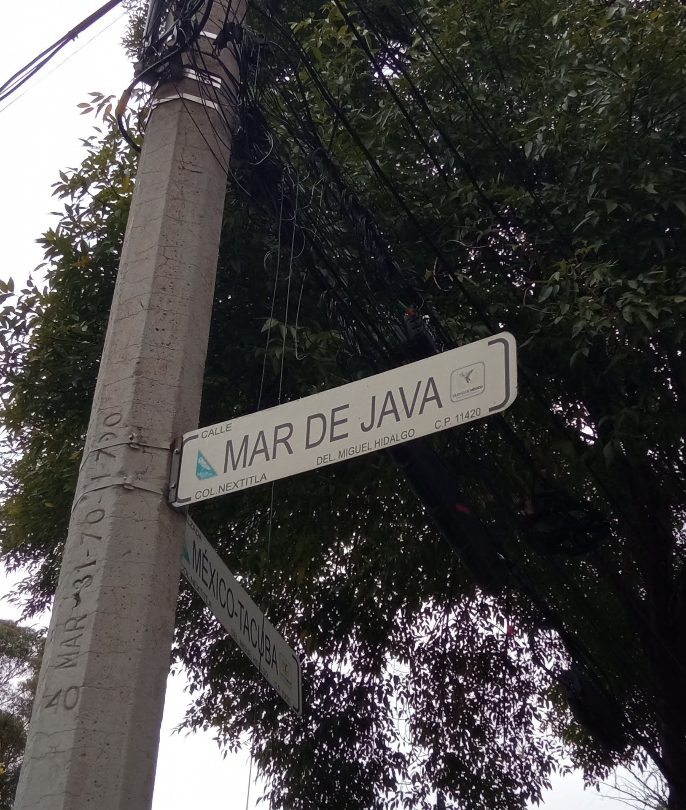

- Conocer a los usuarios: Conocer las necesidades de los usuarios para ofrecerles las soluciones que las satisfagan haciendo constantes consultas que serán recolectadas y estudiadas.
- Actualización constante: Mantener los programas actualizados con las mejores tecnologías utilizables para asegurar un uso nuevo y actual.
- Creación única: Realizar cosas innovadoras las cuales puedan ser reconocidos y asociados a nuestra empresa de buena manera mejorando nuestra reputación.
- Vista a lo futuro y lo actual: Mantenerse actualizados sobre las cosas populares entre el sector joven de la población para así basarnos en ellos y lograr consolidarnos a futuro.